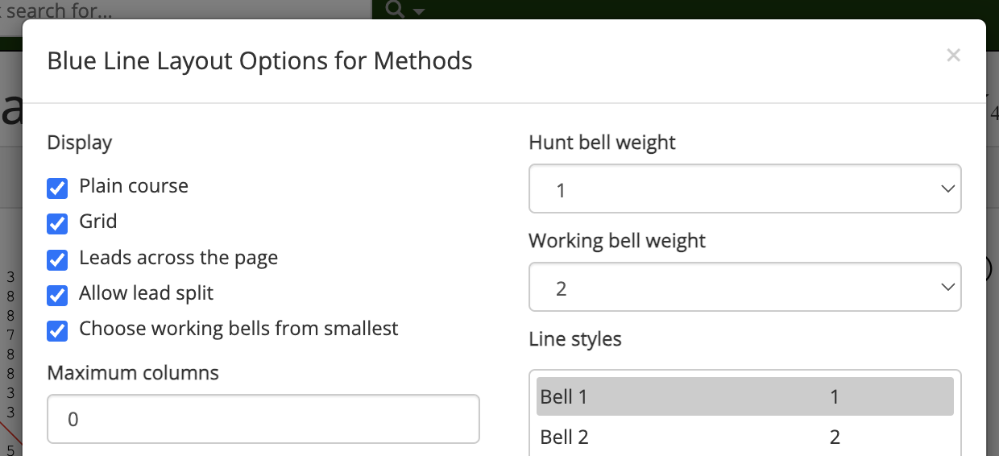

Customising the blue line
The blue line options menu can be viewed by clicking on the  cog icon at the top right of a method page's Blue Line tab.
cog icon at the top right of a method page's Blue Line tab.
Clicking on this button will open a window which allows you to customise the appearance of the blue line.

Once you have selected the layout options you want, click Save changes to save your changes and close the options menu. Your new layout options will be reflected in the Blue Line tab. Clicking Close or the cross in the upper right will close the window without saving your changes. To restore Complib's default layout, click Default settings.
The following sections outline the different customisation options.
Display options
- Plain course
- Displays the method's plain course. Hides the plain course when deselected.
- Grid
- Displays the method's grid. Hides the grid when deselected.
- Leads across the page
- Divides the plain course into leads and fits them to the horizontal space available in the window. When deselected, the plain course will be displayed as a single column.
- Allow lead split
- Allows the method display to be split in the middle of a lead when auto-resizing.
- Choose working bells from smallest
- By default, Complib will choose the biggest working bell (if any exist) and draw its line in the method display. If this option is selected, the smallest working bell will be chosen instead.
Note
Complib will choose one working bell from each working bell cycle for its default line drawing. For methods with more than one cycle, this means that one bell from each of the disjoint cycles will be selected according to the criterion specified here, and each drawn in a different colour. See Method properties > Working bell cycles for more details.
- Maximum columns
- Sets the maximum number of columns which can be fit horizontally in the window before the display wraps. A value of 0 tells Complib to auto-resize the columns to fit them all within the window without wrapping.
- Maximum rows per column
- Sets the number of rows which can be displayed per column before wrapping. A value of 0 will display as many rows as possible (subject to other options).
- Number of rows to display
- Sets the number of method rows to display. A value of 0 will display all the method's rows.
- Starting after row
- Sets the display's starting row number. By default the display starts from rounds, which is always row 0.
Column display options
- Place notation
- Displays the method's place notation to the left of the first displayed column. For methods with palindromic symmetry, only the condensed form of the place notation will be shown.
Warning
Place notation will only be shown if Starting after row is set to 0.
- Bell numbers
- Displays the bell numbers of bells without lines in each row of the plain course.
- Lines
- Displays all currently specified bell lines (see Line styles and bell weights). Has no effect on the grid.
- Show falseness
- Highlights any repeated rows within the course. The first instance of a repeated row will be shown in light red, with any subsequent occurrences highlighted in dark red.
- Show music
- Highlights any rows or partial rows which attract a non-zero score according to the default music scheme in green, and shows the corresponding score value to the right of the column.
- Row nature
- Displays the parity of each row to the right of every column (see Row parity).
- Show handstroke/backstroke
- Indicates whether each row occurs at handstroke (
H) or backstroke (B). - Place bells
- When a working bell is specified (see Line styles and bell weights), shows which place bell is being rung by the working bell at the start of each lead.
- Leadend underline
- Displays a horizontal line between the leadend row and the subsequent leadhead.
Line styles and bell weights
Complib allows you to fine-tune how many lines are displayed and what they look like.
- Hunt bell weight
- Specifies the line weight of all hunt bells. A value of 0 will hide the lines.
- Working bell weight
-
Specifies the line weight of the default working bell(s). A value of 0 will hide the line.
When a non-zero weight is set, Complib will choose one bell from each of the method's working bell cycles and draw lines through them in different colours.
- Line styles
-
Allows you to specify line styles for each numbered bell.

To edit a bell's line style, click on the bell's name. The options underneath will change to reflect the current line style of the bell, and the current line style for the bell will be drawn on the right of the bell list.
- Bell number
- Specifies that the selected bell's number should be displayed at all times, including when a line is drawn over it.
- Line weight
- Specifies the line weight to be used for the selected bell. A weight of 0 will hide the line.
Warning
A display style which is manually specified for any hunt bell(s) or the auto-assigned working bell(s) will be overridden by the default styles specified by Hunt bell weight and Working bell weight. In order to manually specify the display style for these bells, set the relevant default weight to 0 first.
- Line colour
- Specifies the colour of the selected bell's line. Every bell has a default colour. Changes to a bell's default colour will be reflected in the grid as well as in the plain course diagram.